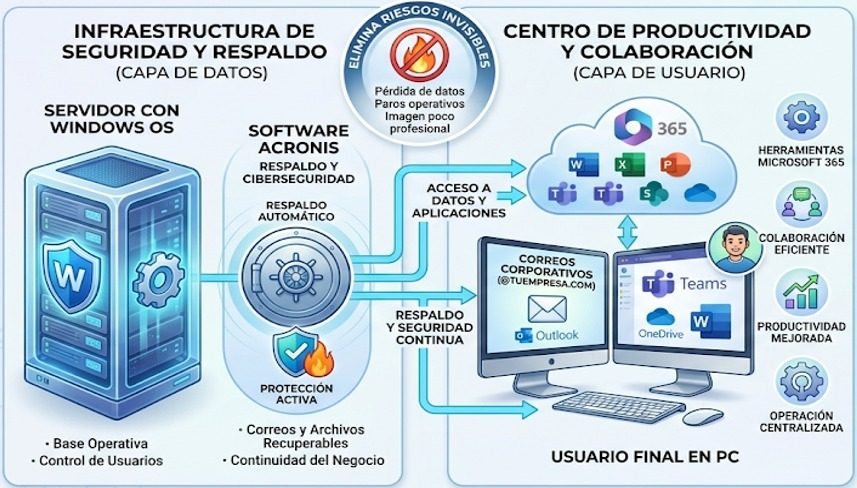

Para quién es
Para empresas que ya no pueden permitirse que su operación dependa de la computadora de una persona, pero que tampoco necesitan —ni quieren— montar un área de TI completa.
También para empresas que sí tienen un equipo de TI y quieren quitarle de encima la operación repetitiva: altas y bajas de usuarios, licencias, respaldos, parches y soporte de primer nivel, para que se concentre en los proyectos del negocio.
- Opera con herramientas gratuitas o correo personal y necesita una imagen profesional.
- No tiene certeza de que sus respaldos sirvan para recuperar la operación.
- Depende de una sola persona que sabe cómo está armado todo.
- Ha crecido y ya no sabe quién tiene acceso a qué información.
- Quiere un costo de TI predecible en lugar de sustos y compras de emergencia.
Qué incluye la solución
Correo corporativo
@tuempresa.com con Outlook, calendario y contactos compartidos.
Productividad Microsoft 365
Word, Excel, Teams, OneDrive y SharePoint, configurados y administrados.
Respaldo automatizado
Correo, documentos, servidores y dispositivos personales, sin que el usuario tenga que hacer nada.
Ciberseguridad activa
Protección anti-ransomware y anti-malware, y defensa frente a errores humanos.
Control de usuarios
Gestión, control y auditoría de accesos a la información de la empresa.
Continuidad del negocio
Recuperación rápida ante fallas o ciberataques, con copias replicadas en la nube.
Arquitectura de la solución
La solución se apoya en cuatro piezas que trabajan juntas. No es una lista de licencias sueltas: cada parte existe para que la siguiente tenga sentido.
Servidor central Windows Server
Núcleo operativo que concentra los datos empresariales y los servicios críticos en alta disponibilidad.
Protección Acronis Cyber Protection
Respaldos automáticos, detección y bloqueo de ransomware y malware, y protección contra errores humanos en tiempo real.
Respaldo en la nube
Las copias se almacenan en el servidor y se replican en la nube, para recuperación ante desastres y continuidad garantizada.
Usuarios con acceso seguro
Colaboradores con licencias Microsoft 365 y acceso seguro y transparente desde cualquier dispositivo.

Cómo se implementa
- Diagnóstico. Inventario de equipos, licencias, cuentas y respaldos actuales, y una lista honesta de riesgos ordenada por impacto.
- Plan por etapas. Qué se mueve primero, qué se queda como está y en qué ventana se hace cada cambio para no detener la operación.
- Correo e identidades. Dominio propio, cuentas, MFA y permisos por rol.
- Protección y respaldo. Agentes en servidores y equipos, políticas de respaldo y la primera recuperación de prueba.
- Operación y acompañamiento. Mesa de ayuda, monitoreo, parches, altas y bajas, y revisión periódica con un responsable de nuestro lado.
Qué incluye el acompañamiento
- Atención de incidencias y asesoría técnica para los usuarios.
- Configuración y soporte de cuentas Microsoft 365: Outlook, Teams, OneDrive y Office.
- Acompañamiento en tareas administrativas: altas, bajas, cambios de equipo y permisos.
- Revisión de respaldos y pruebas de recuperación, con reporte de resultados.
- Recomendaciones de mejores prácticas y plan de mejora, no solo apagar incendios.
Condiciones comerciales
El servicio se contrata como gasto operativo: costo fijo mensual, deducible y predecible, sin inversión de capital inicial. El licenciamiento se contrata desde un mínimo de cinco licencias y la factura (CFDI) se emite al momento del pago.
La cotización se hace a la medida del número de usuarios, servidores y servicios que entren al alcance. Escríbenos y te la enviamos con el detalle.